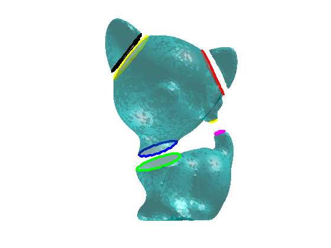
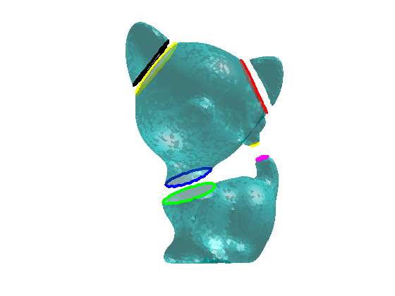
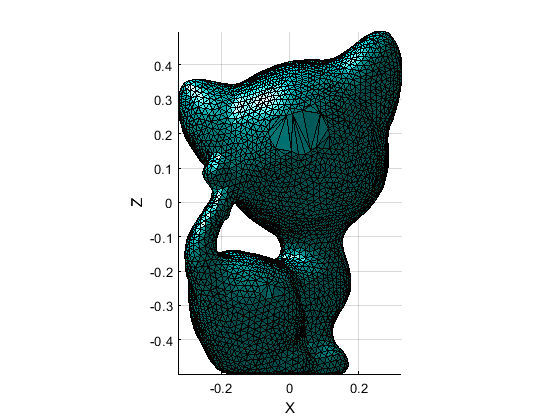
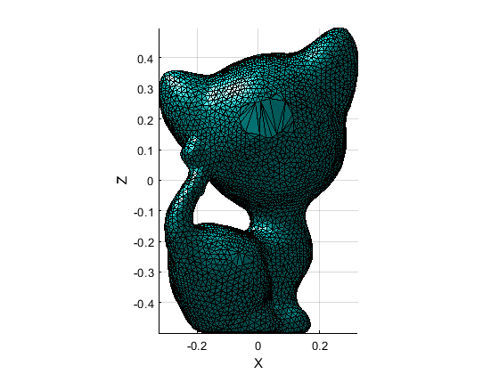

Contents
mesh processing toolbox
Author : nicolas.douillet9 (at) gmail.com, 2020-2025.
addpath('data/'); addpath(genpath('src/'));
Example #1 : connected components
load('kitten_components.mat');
[cc_nb,components] = segment_connected_components(T);
show_mesh_components(V,components);
view(180,0);
4 components found in 2.912714e+00 seconds.
Example #2 : boundary smoothing
show_mesh_boundary_and_holes(V,T); shading interp; camlight left; alpha(0.5); view(180,0); axis off; boundary = detect_mesh_boundary_and_holes(T); nb_iterations = 2; ngb_degre = 6; V_out = smooth_mesh_boundary_and_holes(V,boundary,nb_iterations,ngb_degre); show_mesh_boundary_and_holes(V_out,T); shading interp; camlight left; alpha(0.5); view(180,0); axis off;
8 boundaries detected in 1.048801e-01 seconds. 8 boundaries detected in 6.752710e-02 seconds. Mesh boundaries smoothed in 1.157760e-02 seconds. 8 boundaries detected in 6.325780e-02 seconds.
 
 Example #3 : hole filling
load('kitten_holed.mat'); [V,T] = remove_non_manifold_vertices(V,T); boundary = select_mesh_boundary_and_holes(V,T); shading flat; camlight left; view(0,0); max_perim_sz = 200; T = fill_mesh_holes(V,T,boundary,max_perim_sz); plot_mesh(V,T); camlight left; view(0,0);
5 non manifold vertices removed in 1.017926e+00 seconds. 5 boundaries detected in 6.443180e-02 seconds. 5 hole(s) filled by adding 113 triangles in 5.182383e-01 seconds.
 
 Example #4 : curvature
load('kitten.mat'); ngb_degre = 2; N = vertex_normals(V,T,ngb_degre,'raw'); curvature = mesh_curvature(V,T,N,ngb_degre,'mean'); show_mesh_curvature(V,T,curvature); colormap(flipud(1-jet.^0.5)); view(180,0);
mean curvature computed in 6.429970e-01 seconds.

Example #5 : subselection
load('Gargoyle_3k.mat'); plot_mesh(V,T); shading flat; camlight left; view(-90,0); n = [0 1 1]; I = [-23 -751 -13]; [V_out,T_out] = select_submesh(V,T,n,I); % Gargoyle top part plot_mesh(V_out,T_out); shading flat; camlight left; view(-90,0);
submesh with 586 vertices and 3372 triangles selected in 2.846350e-02 seconds.


Exammple #6 : mesh upsampling
load('sinusoidal_dodecahedron_MR.mat'); plot_mesh(V,T); shading faceted; camlight left; [V,T] = upsample_mesh(V,T); % 'default' / midedge or 'centre' plot_mesh(V,T); shading faceted; camlight left;


Example #7 : mesh slicing
load('Armadillo_20k.mat'); thres = -11; n = [0 0 1]; P = [0 0 thres]; slices_nb_max_contours = 6; slc_step = 3; raw_edg_list = query_edg_list(T,'sorted'); srt_itx_vtx_lsts = slice_mesh(V,T,n,P,true,slices_nb_max_contours,'vertical',slc_step); plot_mesh(V,T), shading interp, camlight left; draw_slice_contours({srt_itx_vtx_lsts}); patch([max(V(:,1)) min(V(:,1)) min(V(:,1)) max(V(:,1))], [max(V(:,2)) max(V(:,2)) min(V(:,2)) min(V(:,2))], thres*ones(1,4), [1 1 1 1], 'FaceColor', [1 1 0]), hold on; alpha(0.5); view(142.5,30);